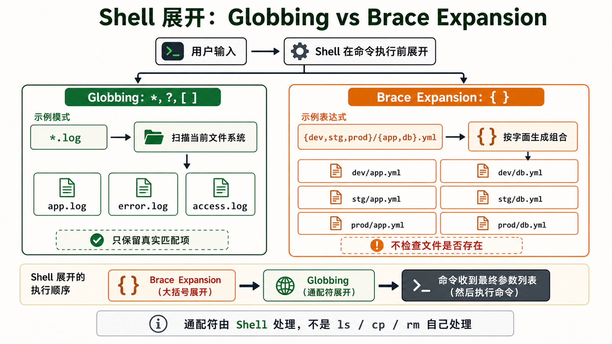
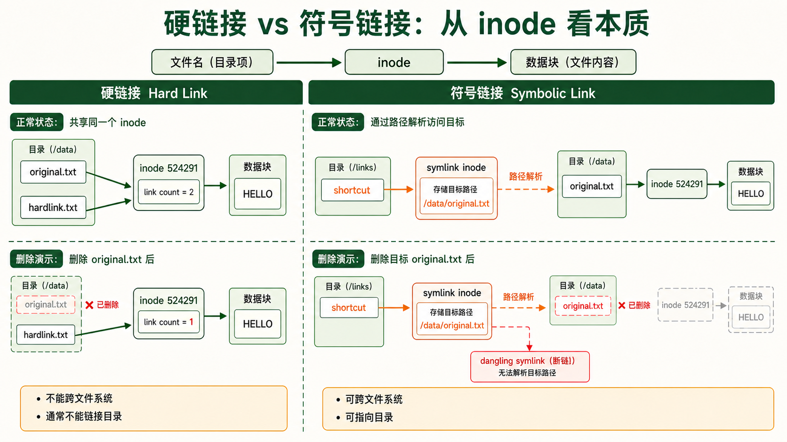
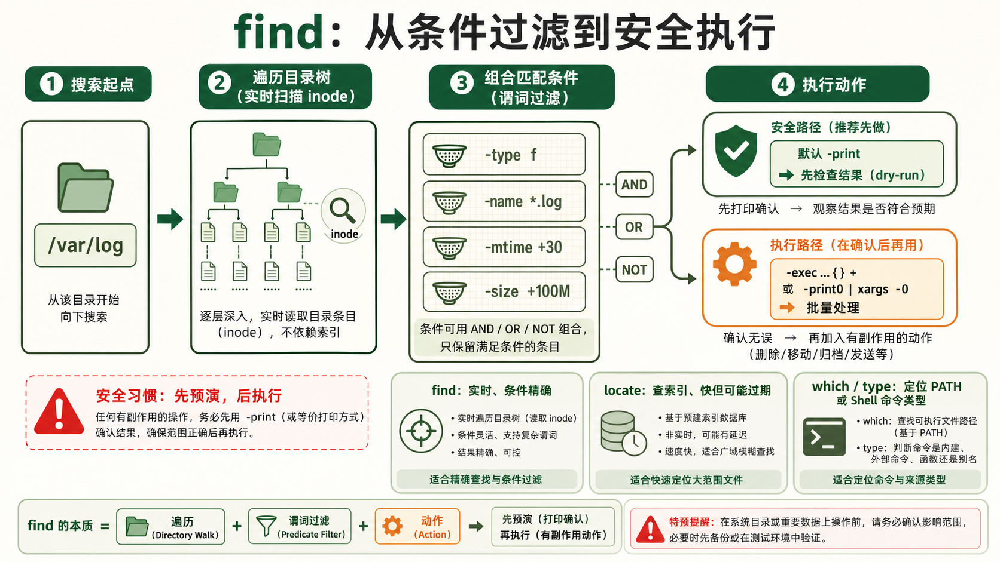

1文件类型识别 —— 不只是"普通文件"和"目录"
ls -l 第一列的玄机 —— 7 种文件类型
基础文件类型 = ls -l 输出的第一个字符
在 Linux 中，"文件"不只是一个存数据的容器。有 7 种不同类型的文件，每一种在 ls -l 输出的第一个字符就能识别。这第一个字符后面的 9 个字符才是权限位 (rwx for owner / group / other)。
| 字符 | 类型 | 本质 | 示例 | 常见位置 |
|---|---|---|---|---|
- | 普通文件 (regular file) | 存储字节序列 | 文本、图片、二进制程序 | 所有目录 |
d | 目录 (directory) | 文件名→inode 的映射表 | 任何文件夹 | 无处不在 |
l | 符号链接 (symbolic link) | 存储目标路径的字符串 | 快捷方式、版本切换 | /usr/bin 中大量使用 |
b | 块设备 (block device) | 支持随机访问的 I/O 设备 | 磁盘、USB 驱动器 | /dev/sda、/dev/sdb |
c | 字符设备 (character device) | 流式 I/O 设备，按字节读写 | 终端、键盘、串口 | /dev/tty、/dev/null |
p | 命名管道 (FIFO) | 进程间通信的"管" | mkfifo mypipe | /run/systemd/ 等 |
s | Socket (套接字) | 进程间网络通信的端点 | UNIX domain socket | /var/run/、/tmp/ |
ls -l /bin/bash
# -rwxr-xr-x 1 root root 1396520 Jan 6 2025 /bin/bash
# ^
# - 表示这是普通文件
ls -ld /etc
# drwxr-xr-x 178 root root 12288 Jul 15 10:30 /etc
# ^
# d 表示这是目录
ls -l /dev/sda
# brw-rw---- 1 root disk 8, 0 Jul 15 10:30 /dev/sda
# ^
# b 表示块设备 (注意权限位前面的逗号：8,0 = major, minor 设备号)
ls -l /dev/null
# crw-rw-rw- 1 root root 1, 3 Jul 15 10:30 /dev/null
# ^
# c 表示字符设备file 命令 —— 不看名字，看内容
扩展名不能保证内容格式。file 会综合魔术字节、文本特征等规则推测文件类型，适合作为第一步检查；它的结果不是安全性证明，也不能取代解析器或签名验证。
file /bin/ls
# /bin/ls: ELF 64-bit LSB pie executable, x86-64, dynamically linked, stripped
# ELF = Executable and Linkable Format，Linux 的可执行文件格式
file mydata.gz
# mydata.gz: gzip compressed data, max compression, from Unix
file document.pdf
# document.pdf: PDF document, version 1.4
file unknown_file
# unknown_file: data
# "data" 表示 file 不认识——可能是加密过的内容或损坏的文件一个没有扩展名的文件
mystery，你不知道它是什么——file mystery 就能告诉你它是 PNG 图片、Bash 脚本还是 ELF 可执行文件。永远不要靠扩展名判断文件类型。这在日常使用和安全审计中都至关重要。
2最常用文件操作命令大全
查看与导航 —— 在文件系统中"走路"和"看路"
必会ls —— 你最常用的命令，但你只用到了它 10% 的功能
ls 看似简单，但它的选项组合能让你用全新的方式理解目录。每个选项解决一个具体的"查看需求"：
| 选项 | 完整含义 | 使用场景 |
|---|---|---|
ls -l | long format —— 详细列表 | 想看权限、所有者、大小、修改时间 |
ls -a | all —— 包括隐藏文件 (以 . 开头) | 查看 .bashrc、.ssh、.gitignore |
ls -h | human-readable —— 大小变为 K/M/G | 一眼看懂文件多大 (配合 -l 使用) |
ls -t | time —— 按修改时间排序 | 看最近改动过哪些文件 |
ls -r | reverse —— 反转排序 | 配合 -t：最新的在最后面 |
ls -S | size —— 按文件大小排序 | 找哪个文件占空间最大 |
ls -d | directory —— 只看目录本身而非内容 | 检查目录属性 (如权限) |
ls -i | inode —— 显示 inode 编号 | 查看硬链接、判断两个文件是否指向同一数据 |
# 最常用的组合
ls -la # 显示所有文件 (含隐藏) 的完整属性
ls -lh # 人类可读的文件大小
ls -ltr # 按时间排序，最新的在最后 (适合看"最近改了什么")
ls -lSrh # 按大小排序，最小的在上面，大小人类可读
# 实战：查看 /var/log 下最近修改的日志
ls -ltr /var/log/ | tail -5cd / pwd —— 切换和定位
cd 是 builtin 命令 (内建在 Shell 中，不是外部程序)，因为它必须改变当前 Shell 的工作目录——外部程序无法修改父进程的状态。
cd /etc/nginx # 绝对路径
cd ../conf.d # 相对路径 (.. = 上一级)
cd - # 回到上次的目录 (极其实用！)
cd ~ # 回到用户家目录
cd ~alice # 进入 alice 用户的家目录
pwd # 打印当前工作目录 (print working directory)stat —— 文件的"身份证"
ls -l 只显示了部分元数据。stat 展示文件的完整元数据：三个时间、inode 编号、设备号、链接数、权限的八进制表示、SELinux 上下文。对于排查文件修改、理解文件系统底层结构非常关键。
stat /etc/nginx/nginx.conf▶ 参考输出
File: /etc/nginx/nginx.conf
Size: 1615 Blocks: 8 IO Block: 4096 regular file
Device: 801h/2049d Inode: 524289 Links: 1
Access: (0644/-rw-r--r--) Uid: ( 0/ root) Gid: ( 0/ root)
Access: 2026-07-15 10:30:00.123456789 +0800 # 最后访问时间
Modify: 2026-07-14 15:20:00.987654321 +0800 # 最后修改时间 (内容)
Change: 2026-07-14 15:20:00.987654321 +0800 # 最后变更时间 (元数据/权限)Access (atime)： 最后一次读取文件的时间
Modify (mtime)： 最后一次修改文件内容的时间 (最常用的"修改时间")
Change (ctime)： 最后一次修改文件元数据 (权限/所有者) 的时间
修改内容时 mtime 和 ctime 同时更新。只改权限时只有 ctime 更新。现代系统常通过
noatime 挂载选项禁用 access time 更新以提高性能。
创建、复制、移动与删除 —— 谨慎也是一种能力
实操mkdir —— 创建目录
最常用的选项只有两个：-p (递归创建多层目录，即使中间层不存在) 和 -m (创建时直接指定权限，不用再 chmod 一次)。
mkdir projects # 创建单个目录
mkdir -p /data/backup/2026/07/15 # 一次性创建 5 层目录
mkdir -m 700 /secure/data # 创建并设权限为 rwx------touch —— 创建空文件 or 更新时间戳
虽然最常用于"创建空文件"，但 touch 的真正目的是更新文件的时间戳——如果文件不存在就创建，如果存在就把它的 access time 和 modify time 更新为"现在"。
touch newfile.txt # 创建空文件 (或更新已存在文件的时间)
touch -t 202501011200 old.log # 设置文件时间为 2025-01-01 12:00
touch -a file.log # 只更新 access time
touch -m file.log # 只更新 modify timecp —— 复制文件的深层学问
cp 默认复制文件内容，而 -a 还尽量保留权限、时间戳和符号链接等属性。部分文件系统支持写时复制（reflink），可用 --reflink=auto 在支持时减少初始写入；这与编程语言对象的“浅拷贝/深拷贝”不是同一个概念。
cp file1 file2 # 基本复制 (覆盖目标文件，不保留属性)
cp -r dir1/ dir2/ # 递归复制目录 (-r = recursive)
cp -a src/ dst/ # 归档模式 = -dR --preserve=all
# -a = 完全复制：保留权限、时间戳、所有权、符号链接本身 (不解引用)
# 日常备份和迁移时的唯一正确选项
cp -u src/*.conf /backup/ # --update：只复制源更新的文件 (比目标新)
cp -v file /backup/ # --verbose：显示复制过程
cp -n file /backup/ # --no-clobber：不覆盖已存在的文件cp -r 复制目录和普通文件，但符号链接会被解引用为实际文件。权限和所有权可能变成当前用户的。cp -a 会保留一切：符号链接还是符号链接、权限原样不动、时间戳保持原样。备份目录时永远用 cp -a。
mv —— 移动 = 改路径名
在同一文件系统中，mv 不是"剪切+粘贴"——它只是改变了目录项中文件名的指向，数据块本身不动。所以同分区内移动 GB 级文件是瞬时完成的。跨文件系统的 mv 才是真正的"复制+删除"。
mv oldname newname # 重命名文件/目录
mv file.txt /backup/ # 移动文件到目标目录
mv -i file.txt /backup/ # 如果目标存在则询问是否覆盖
mv -n file.txt /backup/ # 不覆盖已存在的文件
mv -v *.log /archive/ # 显示移动过程
# 批量重命名：给所有 .txt 文件加 .bak 后缀
for f in *.txt; do mv "$f" "${f}.bak"; donerm —— 最危险的命令，没有之一
rm 默认不经过桌面回收站，而是移除目录项；当没有其他硬链接和进程继续持有文件时，文件系统可回收相应空间。误删后能否恢复取决于文件系统、快照、覆盖写入和设备特性，不能依赖现场恢复。执行递归删除前先核对路径与备份，尤其要避免通配符展开成超出预期的目标。
rm -rf / —— 删除整个系统rm -rf * —— 删除当前目录所有内容rm -rf .* —— 删除当前目录所有内容包括 .. (父目录！)rm -rf "$DIR/" —— 如果变量未定义就等于 rm -rf /！永远在
rm -rf 之前多看一秒钟路径。在脚本中使用 rm -rf "${VAR:?}/" 避免变量为空。
rm file.txt # 删除文件
rm -i *.log # 每删一个都确认 (安全模式)
rm -r old_project/ # 递归删除目录及其内容
rm -rf temp/ # 强制递归删除，不确认 (极度危险！)
rm -- -f # 删除名为 -f 的文件 (-- 告诉 rm 后面不是选项)内容查看与编辑辅助命令
常用cat / head / tail —— 查看文件内容
cat file.txt # 打印整个文件
cat -n file.txt # 带行号输出
cat file1 file2 > combined.txt # 拼接多个文件
head -n 20 file.txt # 显示文件前 20 行
head -c 1024 binary_file # 显示文件前 1024 字节
tail -n 50 access.log # 显示文件最后 50 行
tail -f /var/log/nginx/access.log # 实时追踪文件新增内容 (CTRL+C 退出)
tail -F /var/log/app.log # 即使文件被轮转 (logrotate) 也会重新打开新文件less —— 大型文件阅读器
cat 对 GB 级日志文件是灾难——终端会被填满。less 是大文件查看的标准工具。它不一次性加载整个文件到内存，而是按需分页。快捷键：/ 搜索、n 下一匹配、G 跳到末尾、g 跳到开头、q 退出。
less /var/log/nginx/access.log # 打开大文件
less -N file.txt # 显示行号
# 在 less 内部按 / 然后输入关键词搜索，按 n 跳到下一处ln —— 创建链接 (详见第4节软硬链接详解)
ln -s /usr/local/nginx-1.25.0 /usr/local/nginx # 创建符号链接 (版本切换)
ln file.txt hardlink.txt # 创建硬链接
ln -sf /opt/app/v2.1 /opt/app/latest # 强制覆盖已有符号链接3通配符与路径扩展 (Globbing)
Shell 的文件名匹配魔法 —— 一行命令操作一百个文件
进阶Globbing = Shell 在命令执行前对通配符的展开
当你敲下 ls *.log 时，Shell (不是 ls 命令本身!) 会先在当前目录下找到所有匹配 *.log 的文件，然后把它们展开为一个列表传给 ls。这个过程叫 Globbing (文件名展开)。通配符由 Shell 处理，不是由命令处理。
| 通配符 | 匹配规则 | 示例 | 匹配结果 |
|---|---|---|---|
* | 任意个任意字符 (包括零个) | *.log | app.log、error.log、access.log |
? | 恰好一个任意字符 | file?.txt | file1.txt、fileA.txt 但不匹配 file10.txt |
[abc] | 方括号内任一字符 | [abc].txt | a.txt、b.txt、c.txt |
[a-z] | 范围内任一字符 | data[0-9].csv | data0.csv 到 data9.csv |
[!abc] | 不在括号内的任一字符 | [!0-9].txt | 不以数字开头的 .txt 文件 |
** | 递归匹配 (仅部分 Shell 支持) | **/*.go | 所有子目录下的 .go 文件 (需 shopt -s globstar) |
# Globbing 实战
ls *.conf # 所有 .conf 文件
cp /etc/nginx/sites-available/* /backup/nginx/ # 复制所有站点配置
rm data_2026-0[1-3]-*.bak # 删除 2026年1-3月 的 .bak 文件
grep -r "ERROR" *.log # 在所有 .log 文件中搜索 ERROR大括号展开 (Brace Expansion) —— 不是通配符，但更强大
大括号展开不是 Glob！展开发生在通配符之前，且不检查文件是否存在。它按字面生成所有组合：
echo {app,db,web}.conf▶ 输出
app.conf db.conf web.confecho file_{a..e}.txt # .. 表示范围▶ 输出
file_a.txt file_b.txt file_c.txt file_d.txt file_e.txt# 嵌套大括号展开
echo {dev,stg,prod}/{app,db}.yml▶ 输出
dev/app.yml dev/db.yml stg/app.yml stg/db.yml prod/app.yml prod/db.yml# 实际用途：批量创建目录结构
mkdir -p project/{src/{js,css,img},docs,tests/{unit,e2e}}
通配符 (*, ?, [ ])：Shell 展开时检查文件系统——只有匹配实际存在的文件才会展开。文件不存在 → 原样保留。
大括号展开 ({ })：Shell 展开时不检查文件系统——直接生成所有组合，不管文件是否存在。
所以
echo {a,b,c} 一定输出 a b c，而 echo [abc] 只会在当前目录下存在 a、b 或 c 时才输出它们。
4软硬链接的区别 —— 面试最爱问的"送分题"
硬链接 vs 符号链接 —— 从 inode 层面理解
深入先理解 inode —— 文件系统的"身份证号码"
在 Linux 文件系统中，文件名 和 文件数据 是分离的。每个文件有一个 inode (索引节点)，存储了文件的元数据 (大小、权限、时间戳、数据块位置) 和指向实际数据块的指针。文件名只是指向 inode 的一个"标签"——删除文件名不等于删除数据，只有当没有任何文件名指向那个 inode (链接数为 0) 时，数据才真正被释放。
目录项 (dentry)：文件名 → inode 编号的映射
inode：元数据 + 指向数据块的指针数组
数据块：文件的实际内容
硬链接 (Hard Link)
本质：两个文件名指向同一个 inode。创建硬链接只是在目录中多加了一个"标签"指向同一个 inode，inode 的链接计数 +1。删除其中一个文件名，数据仍然在——只要还有一个文件名指向它。只有当链接计数降到 0，inode 和数据块才被释放。

硬链接的限制：
- 不能跨文件系统：inode 只在当前文件系统内唯一，到另一个文件系统找不到同一个 inode
- 不能用于目录：大多数系统禁止 (会导致目录循环引用，文件系统遍历陷于死循环)
- 无法区分：创建后，硬链接和原文件完全没有区别——它们是平等的关系
echo "hello" > original.txt
ln original.txt hardlink.txt # 创建硬链接
ls -li original.txt hardlink.txt # 第一列 (inode 编号) 相同！▶ 输出
524291 -rw-r--r-- 2 user user 6 Jul 15 10:30 hardlink.txt
524291 -rw-r--r-- 2 user user 6 Jul 15 10:30 original.txt
# ^ 链接计数 = 2
# 524291 = 同一个 inoderm original.txt # 删除原文件
cat hardlink.txt # 数据仍然在！
# hello符号链接 (Symbolic Link / Soft Link)
本质：一个独立的文件，有自己的 inode，存储的内容是目标文件的路径字符串。相当于 Windows 的快捷方式。访问符号链接时，内核发现它是符号链接，自动跳转到目标路径。
符号链接的灵活性：
- 可以跨文件系统：链接可以指向任何路径，不管是否在同一分区
- 可以指向目录：没有循环引用风险，ls -l 可以直接显示
- 目标文件删除后：符号链接变成"断链" (dangling symlink)——
ls -l会以红色/闪烁显示
ln -s /usr/local/nginx-1.25.0 /usr/local/nginx # 创建符号链接
ls -l /usr/local/nginx▶ 输出
lrwxrwxrwx 1 root root 26 Jul 15 10:30 /usr/local/nginx -> /usr/local/nginx-1.25.0
# ^ 第一个字符是 l (符号链接)
# -> 显示目标路径
# 文件大小 26 字节 = 目标路径 "/usr/local/nginx-1.25.0" 的长度对比速查表
| 特性 | 硬链接 | 符号链接 (软链接) |
|---|---|---|
| inode | 共享同一个 inode | 独立的 inode |
| 删除原文件 | 数据仍然存在 | 链接断开 (红色显示) |
| 跨文件系统 | 不可以 | 可以 |
| 指向目录 | 不可以 | 可以 |
| 磁盘占用 | 不额外占空间 (只是一个目录项) | 占用一点空间 (存储路径字符串) |
| 文件系统检测 | ls -i 看 inode 编号是否相同 | ls -l 第一个字符是 l，有 -> 箭头 |
| 典型用例 | 备份快照 (时间点文件保护) | 版本切换 (nginx → nginx-1.25.0) |
版本切换的经典模式
# 部署新版本
tar -xzf app-2.1.tar.gz -C /opt/app/
ln -sf /opt/app/app-2.1 /opt/app/current
# 回滚 (如果 2.1 有问题)
ln -sf /opt/app/app-2.0 /opt/app/current
# Nginx 指向 current
server { root /opt/app/current/public; }
# 切换版本 = 改一个符号链接 = 毫秒级完成 = 零停机5查找命令 —— 在海量文件中找到你要的
find —— 瑞士军刀级别的文件查找器
核心find 的通用语法
find 搜索起点 匹配条件 执行动作
find 的威力在于它能组合无限个条件——按名称、大小、时间、权限、所有者、文件类型...条件之间可以用 -a (AND)、-o (OR)、! (NOT) 进行任意逻辑组合。默认动作是 -print (打印路径)，但你也可以用 -exec 对每个结果执行任何命令。
按名称查找
find /var/log -name "*.log" # 精确匹配文件名 (区分大小写)
find /var/log -iname "ERROR*.log" # 不区分大小写
find /etc -name "*.conf" -type f # 只匹配普通文件 (排除目录)
find /var/log -name "*.gz" -type f -size +100M # 大于 100MB 的 .gz 文件按时间查找 (运维最常用)
| 选项 | 含义 | 数值 |
|---|---|---|
-mtime n | 修改时间距今恰好 n 天 | n=24小时为单位 |
-mtime -n | 修改时间距今小于 n 天 | 今天~n天前 |
-mmin n | 修改时间距今恰好 n 分钟 | 分钟级精确 |
-atime n | 访问时间距今恰好 n 天 | |
-ctime n | 元数据变更时间距今恰好 n 天 | |
-newer file | 比某文件更新的文件 | 对比文件的时间戳 |
# 查找 7 天内修改过的 .log 文件
find /var/log -name "*.log" -mtime -7 -type f
# 查找 30 分钟内修改过的文件 (排查"现在发生了什么")
find /home -mmin -30 -type f
# 查找超过 30 天未修改的旧备份文件 (用于清理)
find /backup -name "*.tar.gz" -mtime +30 -type f
# 查找比 reference.txt 更新的所有文件
find . -newer reference.txt -type f按大小查找
find / -type f -size +1G # 查找大于 1GB 的文件 (排查磁盘占用)
find /var/log -name "*.log" -size +500M # 大于 500MB 的日志文件
find /tmp -type f -size 0 # 查找空文件 (0 字节)
find / -name "core" -type f -size +10M # 查找大 core dump 文件按权限和所有者查找
find /home -type f -perm 777 # 权限恰好为 777 的文件 (安全检查)
find /tmp -type f -perm -o+w # world-writable 的文件
find /var/www -type f ! -user www-data # 不属于 www-data 用户的文件
find /home -type f -empty # 查找空文件对找到的文件执行操作 (-exec)
{} 是找到的文件名的占位符。\; (反斜杠+分号) 告诉 find -exec 参数到此结束。
下方删除、压缩命令只用于演示 -exec 语法。真实日志可能仍被进程打开，不能直接按年龄删除或压缩当前 *.log；应先确认轮转与归档规则，在专用归档目录中预览候选文件，再按需操作。
# 删除 30 天前的日志
find /var/log -name "*.log" -mtime +30 -exec rm -f {} \;
# 修改文件权限
find /var/www -type f -exec chmod 644 {} \;
find /var/www -type d -exec chmod 755 {} \;
# 批量 gzip 压缩
find /var/log -name "*.log" -mtime +7 -exec gzip {} \;
# 移动到归档目录
find /tmp -name "*.tmp" -mtime +1 -exec mv {} /archive/ \;
# 使用 + 替代 \; 可以减少 fork 次数 (把多个结果拼成一个命令)
find /var/log -name "*.log" -mtime +30 -exec rm -f {} +在使用
-exec rm 或 -exec mv 之前，先用不带 -exec 的 find 命令预演 (dry-run)，确认结果是你想操作的文件。一个错位的 find -exec rm 可能是灾难性的——和 rm -rf 一样无法恢复。
find + xargs：另一种执行方式
xargs 从标准输入读取参数，可通过 -P 并行执行；它不是 -exec 的通用替代。文件名可能包含空格甚至换行，因此将 find 结果传给它时应成对使用 -print0 与 xargs -0；删除前先打印清单核对。
# 查找并删除 (等效于 find -exec rm)
find /var/log -type f -name "*.log" -mtime +30 -print0 | xargs -0 -r rm -f
# 并行压缩 (用 4 个进程同时执行，适合多核)
find /var/log -type f -name "*.log" -mtime +7 -print0 | xargs -0 -r -P 4 gzip
# 处理带空格的文件名 (用 NUL 分隔替代换行)
find . -name "*.txt" -print0 | xargs -0 grep "ERROR"locate / which —— 快速查找的捷径
常用locate —— 通过索引快速找路径
locate 不扫描文件系统——它查的是一个预建的数据库 (/var/lib/mlocate/mlocate.db)，其中包含了系统所有文件的路径列表。所以 locate nginx.conf 能瞬间返回结果。代价是：数据库不是实时的——新创建的文件要等下一次 updatedb 运行后才能被找到。大多数系统的 cron 每天运行一次 updatedb。
locate nginx.conf # 瞬间找到所有 nginx.conf 文件
locate -i NGINX # 不区分大小写
locate "*.sql" # 查找所有 .sql 文件
locate -c "*.log" # 只显示匹配数量
# 手动更新数据库以立即找到新文件
sudo updatedbwhich —— 这个命令是从哪里执行的？
当你敲 python 时，系统从 $PATH 环境变量中的目录逐个查找，第一个匹配的就被执行。which python 告诉你它找到了哪一个。这对于理解"系统里装了多个 Python 版本，到底在用哪个"非常关键。
which python # /usr/bin/python
which -a python # 显示 PATH 中所有 python 的位置
which ls # /usr/bin/ls (内部命令如 cd 不会有输出——它内建在 Shell 中)type —— Shell 内建命令 vs 外部命令
type 比 which 更准确，因为它能识别 Shell 内建命令 (builtin)、别名 (alias)、函数、外部命令。它本身是 Shell 内建命令，不需要调用外部程序。
type ls # ls is aliased to 'ls --color=auto' (可能是别名)
type cd # cd is a shell builtin (内建命令，which 找不到它)
type type # type is a shell builtin
type find # find is /usr/bin/find (外部命令)find / locate / which 对比
| 命令 | 查找方式 | 速度 | 实时性 | 适用场景 |
|---|---|---|---|---|
find | 实时扫描文件系统 | 慢 (遍历每个 inode) | 100% 实时 | 需要精确条件 (时间/大小/权限) |
locate | 查询预建索引数据库 | 极快 (毫秒级) | 非实时 (依赖 updatedb) | 快速定位已知文件名 |
which | 查找 PATH 中的可执行文件 | 快 | 实时 | "现在哪个 python 会被执行？" |

注解
CD · Continuous Delivery / Continuous Deployment 持续交付／持续部署
ELF · Executable and Linkable Format 可执行与可链接格式
FIFO · First In, First Out 先进先出
USB · Universal Serial Bus 通用串行总线